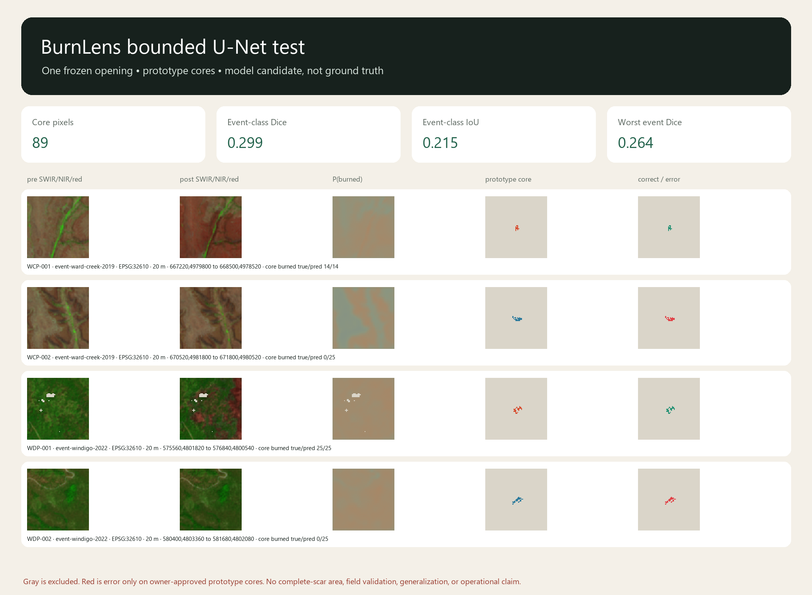

BURNLENS / PHASE THREE / ISSUE #566 / U05
The first U-Net meets the sealed test once.
Prototype evidence, not ground truth. Owner-approved cores from two events do not establish field validity, generalization, complete-scar area, or operational readiness. This result cannot be retried or tuned.
Event-class Dice0.2987
Event-class IoU0.2147
Worst event Dice0.2642
Masked BCE0.7281
Baseline comparison: BELOW_RBR_REJECT_AS_ANALYTICAL_WINNER
Frozen RBR Dice/IoU/worst-event: 1.0000 / 1.0000 / 1.0000. Model: 0.2987 / 0.2147 / 0.2642. A valid trained result is not automatically added value.
Frozen RBR Dice/IoU/worst-event: 1.0000 / 1.0000 / 1.0000. Model: 0.2987 / 0.2147 / 0.2642. A valid trained result is not automatically added value.
Geospatially bound prediction and error evidence

Event results
| Event | Cores | BCE | Macro Dice | Macro IoU | Area difference, pixels |
|---|---|---|---|---|---|
| event-ward-creek-2019 | 39 | 0.7636 | 0.2642 | 0.1795 | 25 |
| event-windigo-2022 | 50 | 0.7004 | 0.3333 | 0.2500 | 25 |
Event and class denominators
| Event | Class | Support | Predicted | TP | FP | FN | Dice denominator | IoU denominator | Dice | IoU | Precision | Recall |
|---|---|---|---|---|---|---|---|---|---|---|---|---|
| event-ward-creek-2019 | background | 25 | 0 | 0 | 0 | 25 | 25 | 25 | 0.0000 | 0.0000 | undefined | 0.0000 |
| event-ward-creek-2019 | burned | 14 | 39 | 14 | 25 | 0 | 53 | 39 | 0.5283 | 0.3590 | 0.3590 | 1.0000 |
| event-windigo-2022 | background | 25 | 0 | 0 | 0 | 25 | 25 | 25 | 0.0000 | 0.0000 | undefined | 0.0000 |
| event-windigo-2022 | burned | 25 | 50 | 25 | 25 | 0 | 75 | 50 | 0.6667 | 0.5000 | 0.5000 | 1.0000 |
Frozen threshold sensitivity
0.25 and 0.75 are diagnostics only. The operating threshold remains 0.50; no selection or retuning is permitted.
| Threshold | Status | Predicted burned | Macro Dice | Macro IoU |
|---|---|---|---|---|
| 0.25 | diagnostic-only-no-selection-or-retuning | 89 | 0.3047 | 0.2191 |
| 0.50 | frozen-operating-threshold | 89 | 0.3047 | 0.2191 |
| 0.75 | diagnostic-only-no-selection-or-retuning | 0 | 0.3597 | 0.2809 |
Probability status
descriptive-only-not-calibrated
Brier score 0.2673; fixed-bin descriptive ECE 0.1532. Two event groups and 89 prototype cores cannot support a calibrated probability or population-calibration claim.
Brier score 0.2673; fixed-bin descriptive ECE 0.1532. Two event groups and 89 prototype cores cannot support a calibrated probability or population-calibration claim.
Patch lineage
| Candidate | Event | Proposed class | CRS | Transform | Window |
|---|---|---|---|---|---|
| WCP-001 | event-ward-creek-2019 | burned | EPSG:32610 | [20.0, 0.0, 667220.0, 0.0, -20.0, 4979800.0] | {'row_offset': 168, 'column_offset': 236, 'height': 64, 'width': 64} |
| WCP-002 | event-ward-creek-2019 | background | EPSG:32610 | [20.0, 0.0, 670520.0, 0.0, -20.0, 4981800.0] | {'row_offset': 68, 'column_offset': 401, 'height': 64, 'width': 64} |
| WDP-001 | event-windigo-2022 | burned | EPSG:32610 | [20.0, 0.0, 575560.0, 0.0, -20.0, 4801820.0] | {'row_offset': 180, 'column_offset': 151, 'height': 64, 'width': 64} |
| WDP-002 | event-windigo-2022 | background | EPSG:32610 | [20.0, 0.0, 580400.0, 0.0, -20.0, 4803360.0] | {'row_offset': 103, 'column_offset': 393, 'height': 64, 'width': 64} |
Boundary
Analytical test-open count: 1. Candidate config, weights, selection, environment, roster, threshold, and code were frozen before opening. No model, threshold, or code retry is authorized.
This is an evaluated model candidate, not an accepted or released model. U06 must reproduce it exactly and decide whether to package or reject it.
Trace: commit 4f71ec7c61ac0ca1b1dcfcd995d1444c9ec00c9e · run BL-2026-07-25-p3o1-t01-u05-test-r001 · model burnlens-unet-binary-v0.1.0 · dataset burnlens-dataset-v0.1.0 · split burnlens-whole-event-split-v0.1.0.